PIXELS · Wii
Alvin and the Chipmunks: The Squeakquel
Capa não disponível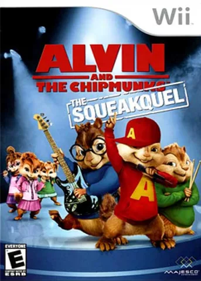
Alvin and the Chipmunks: The Squeakquel
Jogo musical e familiar inspirado no filme, com apresentações, ritmo e desafios para acompanhar os esquilos.
PIXELS REAL ACESSÓRIOS · UNIVERSO NINTENDO
Aventura, esportes, música e diversão para jogar junto. Explore a coleção de Nintendo Wii da Pixels.
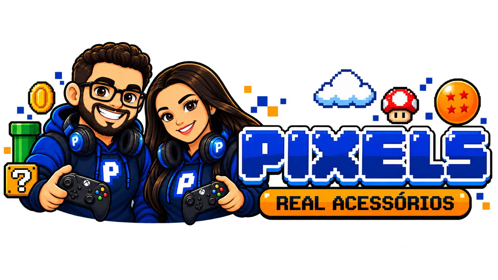
Busque um título, escolha um gênero e consulte os detalhes com a Pixels.

Jogo musical e familiar inspirado no filme, com apresentações, ritmo e desafios para acompanhar os esquilos.
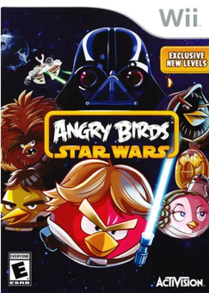
Combina os puzzles de lançamento dos Angry Birds com personagens, poderes e cenários inspirados em Star Wars.
O nome do arquivo é genérico; confirme a edição para associar a capa e a sinopse corretas.
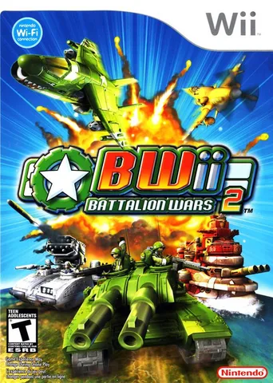
Ação tática em tempo real: comande esquadrões, veículos e unidades em batalhas terrestres, navais e aéreas.
Combates entre piões Beyblade, com foco em duelos, estratégia de arena e evolução dos competidores.
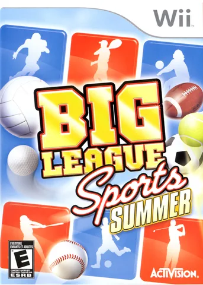
Coleção de minijogos esportivos de verão, pensada para partidas rápidas e controles por movimento.
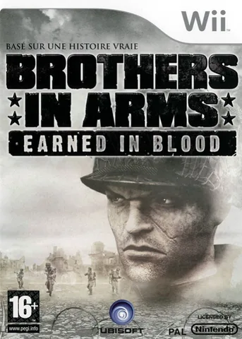
Tiro tático ambientado na Segunda Guerra Mundial, com ênfase em esquadrões e posicionamento. A edição/plataforma do arquivo merece conferência.
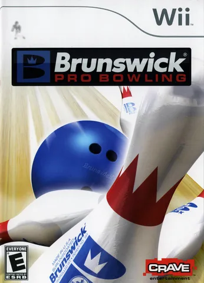
Simulação de boliche com pistas, arremessos e torneios para jogar sozinho ou com outras pessoas.
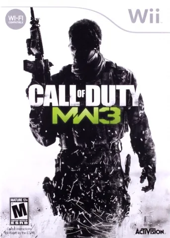
Tiro em primeira pessoa com missões de combate moderno. “US EN” parece indicar a região/idioma do arquivo.
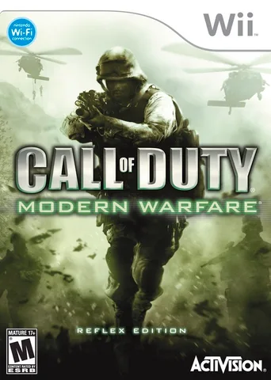
Adaptação para Wii de Modern Warfare, com missões de combate moderno e controles ajustados ao Wii Remote.
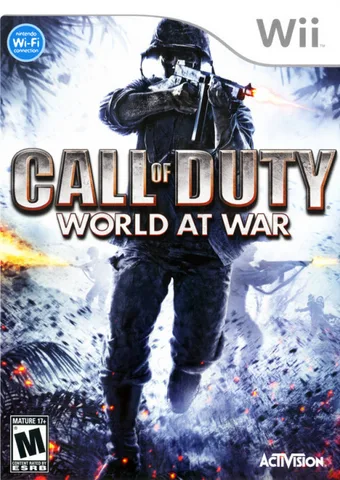
Tiro em primeira pessoa ambientado na Segunda Guerra Mundial, com campanhas militares e combate intenso.
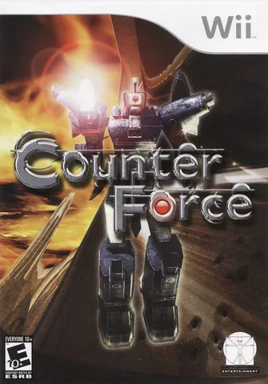
O nome não identifica com segurança uma edição específica; a imagem e os detalhes podem precisar de confirmação.
O arquivo usa o nome genérico Dead Space. Confirme se corresponde a Dead Space: Extraction, título de terror e tiro lançado para Wii.
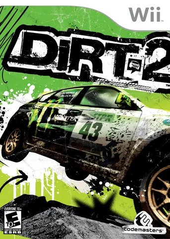
Corridas off-road de rally e eventos em diferentes terrenos, com veículos preparados para derrapagens e saltos.
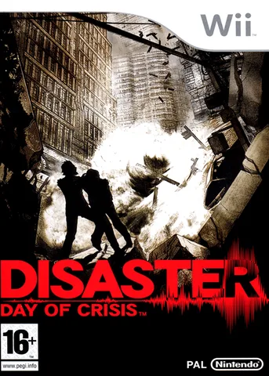
Aventura de ação e sobrevivência em meio a catástrofes naturais, resgates e uma conspiração.
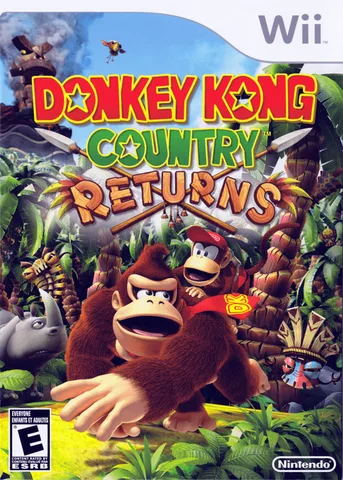
Plataforma de ação com Donkey Kong e Diddy Kong, fases cheias de obstáculos, segredos e colecionáveis.
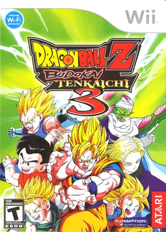
Luta em arenas tridimensionais com um grande elenco de personagens e batalhas inspiradas na série Dragon Ball Z.
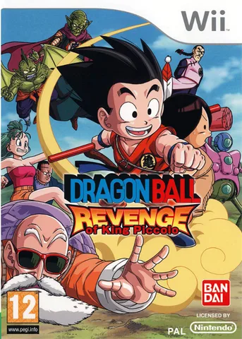
Aventura de ação que acompanha Goku criança em confrontos e cenários do universo Dragon Ball.
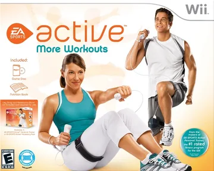
Programa de exercícios para casa com rotinas guiadas, metas e atividades físicas usando acessórios do Wii.
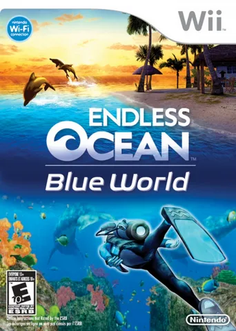
Exploração submarina, observação de vida marinha e mergulhos em diferentes regiões oceânicas.
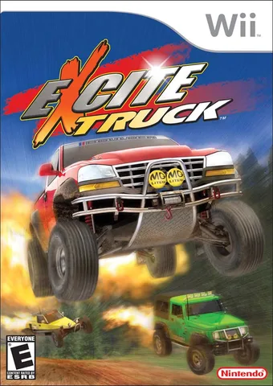
Corrida arcade off-road com saltos, manobras e pistas dinâmicas que recompensam velocidade e ousadia.
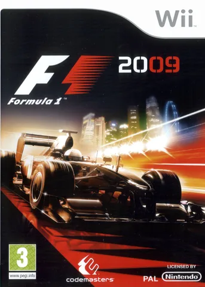
Jogo oficial de Fórmula 1 da temporada de 2009, com equipes, circuitos e corridas de monopostos.
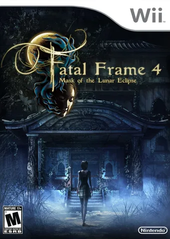
Terror japonês em que a câmera é usada para enfrentar espíritos e investigar mistérios sobrenaturais.
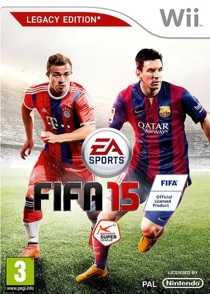
Futebol com clubes, seleções, partidas rápidas e diferentes competições da série FIFA.
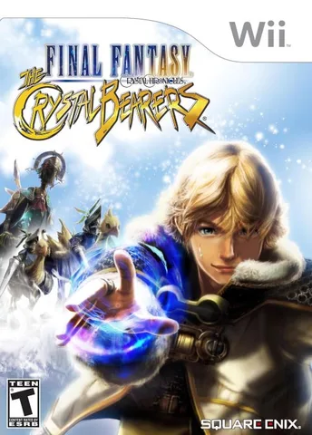
RPG de ação e aventura em um mundo de fantasia, com exploração e habilidades baseadas em poderes cristalinos.
Coleção casual de atividades físicas e minijogos para jogar em sessões curtas, inclusive em família.
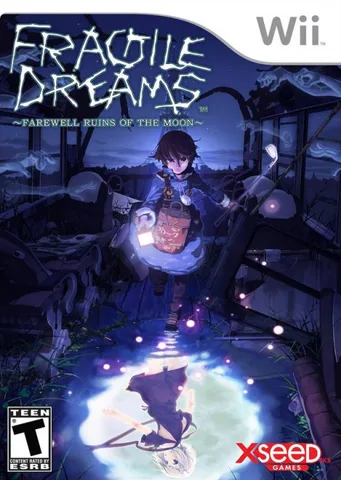
Aventura narrativa melancólica sobre explorar ruínas de um mundo abandonado e descobrir o que aconteceu à humanidade.
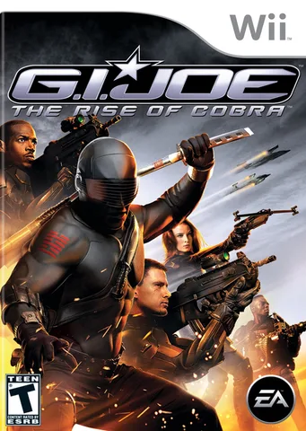
Ação com personagens da equipe G.I. Joe, armas futuristas e combate contra a organização Cobra.
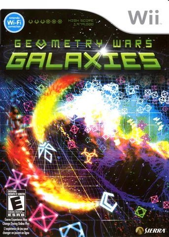
Tiro arcade frenético em arenas geométricas, com enxames de inimigos, pontuação e desafios crescentes.
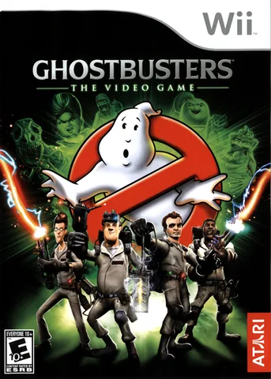
Aventura de ação e comédia sobrenatural em que a equipe dos Caça-Fantasmas captura entidades e investiga ocorrências paranormais.
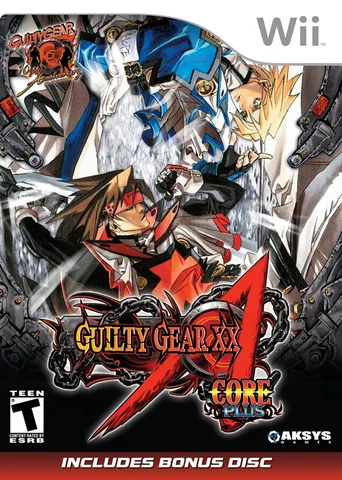
Jogo de luta 2D rápido, com personagens distintos, combos elaborados e estética de anime e rock.
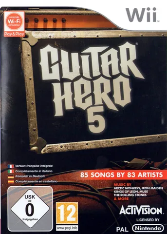
Jogo musical em que os jogadores acompanham notas no ritmo de músicas usando controles em formato de instrumento.
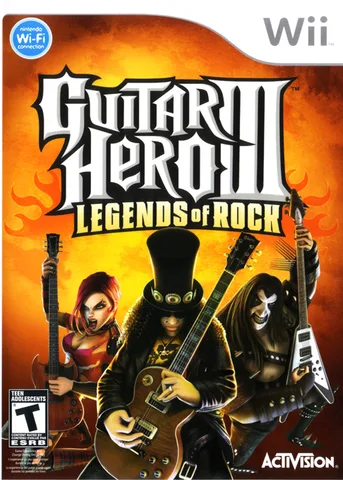
Desafio musical focado em guitarra, com repertório de rock, solos e partidas competitivas.
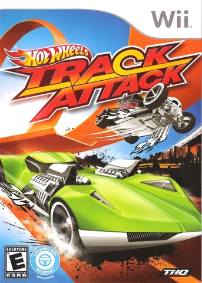
Corridas arcade com carrinhos Hot Wheels em pistas acrobáticas, curvas fechadas e saltos.
Nome técnico de arquivo sem correspondência confiável. A capa e a ficha precisam ser confirmadas antes de publicar.
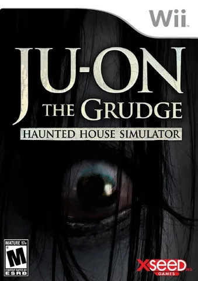
Jogo de terror inspirado na franquia Ju-On, com exploração em ambientes escuros e sustos sobrenaturais.
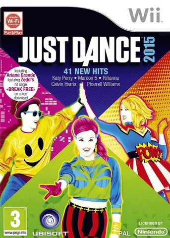
Jogo de dança baseado em coreografias acompanhadas na tela, ideal para partidas em grupo.
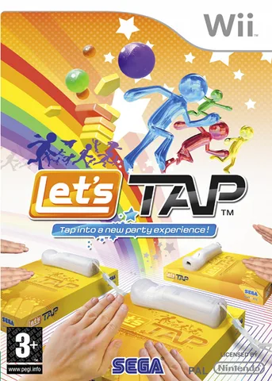
Minijogos que usam batidas na superfície onde o controle é apoiado, oferecendo desafios de ritmo e reflexo.
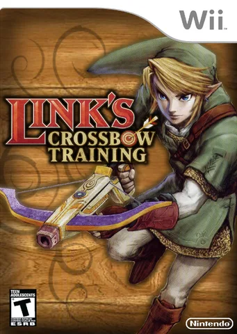
Galeria de tiro ambientada no universo de Zelda, com alvos, pontuação e desafios usando a mira do Wii Remote.
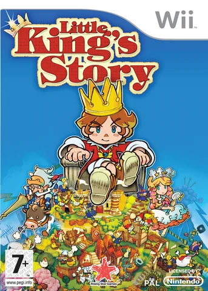
Aventura estratégica em que um jovem rei organiza seus súditos, expande o reino e enfrenta criaturas.
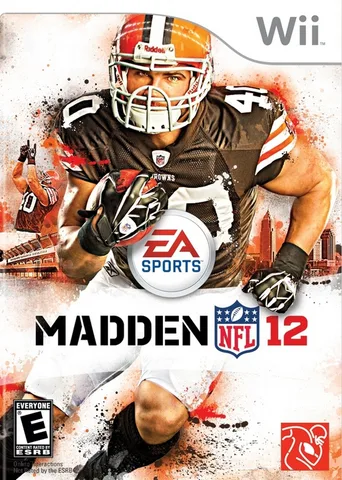
Futebol americano com equipes da NFL, jogadas táticas e modos de temporada.
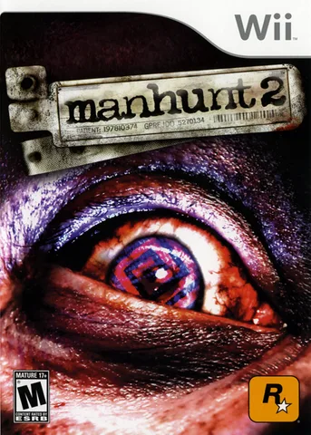
Jogo de ação furtiva e terror psicológico, focado em escapar de perseguidores e sobreviver a situações violentas.
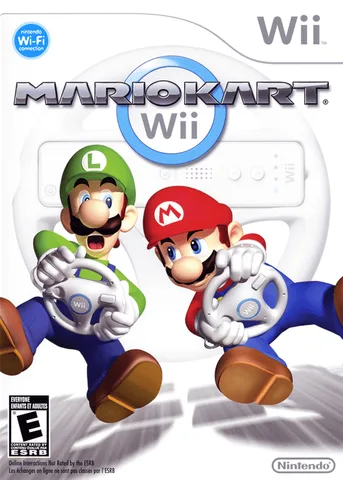
Corridas de kart com personagens Nintendo, itens, pistas coloridas e possibilidade de usar controles por movimento.
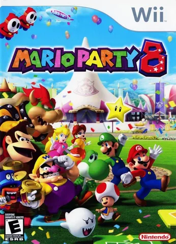
Festa de minijogos com personagens da Nintendo, tabuleiros e desafios para competir em grupo.
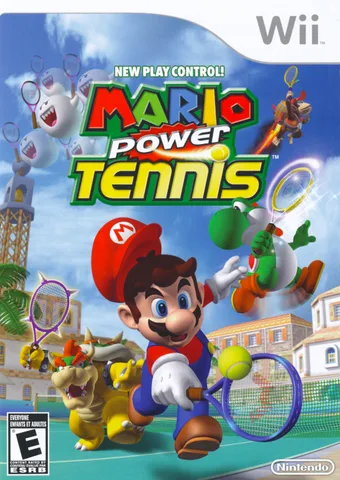
Tênis arcade com Mario e seus amigos, quadras temáticas e golpes especiais.
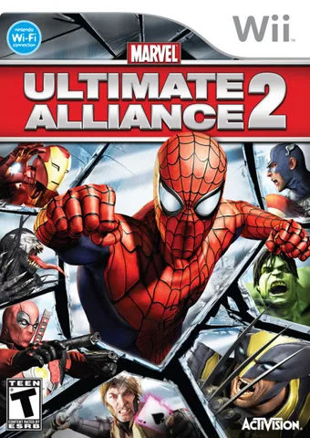
RPG de ação em equipe com heróis da Marvel, habilidades especiais e combates contra grandes grupos de inimigos.
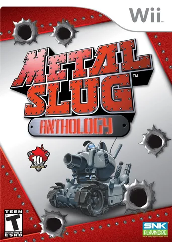
Coletânea de clássicos de ação run-and-gun, com soldados, veículos, chefes e humor visual exagerado.
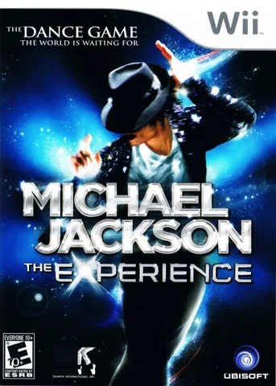
Jogo de dança e ritmo com coreografias inspiradas em apresentações e músicas de Michael Jackson.
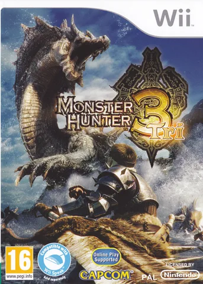
Caçadas a monstros gigantes, criação de equipamentos e progressão por missões em um mundo de fantasia.
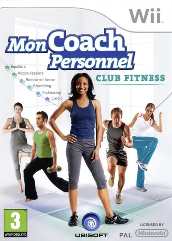
Treinos guiados e planos de condicionamento para praticar em casa com o Wii.
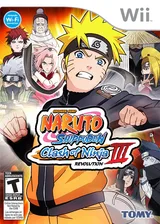
Luta em arenas com personagens de Naruto, golpes especiais e confrontos inspirados no anime.
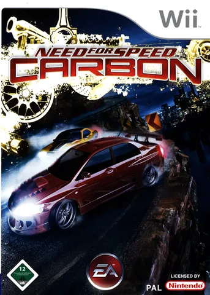
Corridas de rua, disputas por território e personalização de carros em cenários urbanos noturnos.
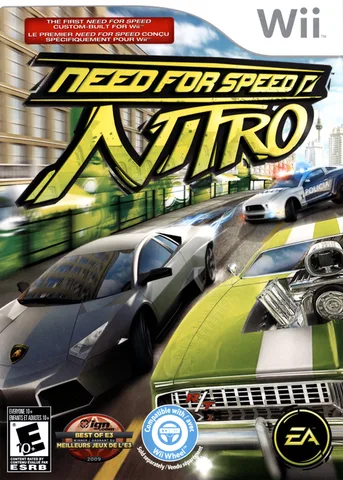
Corrida arcade estilizada, com velocidade elevada, acrobacias e desafios de rua.
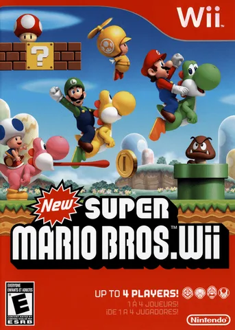
Plataforma cooperativa com Mario e amigos, fases laterais, power-ups e segredos clássicos.
Ação estilizada com combates de espada, duelos contra assassinos e humor irreverente.
Aventura de ação inspirada na mitologia japonesa, com exploração e um pincel celestial que altera o mundo.
Batalhas Pokémon em arenas 3D, com equipes, animações de golpes e confrontos entre treinadores.
Jogo casual de bilhar com diferentes modalidades e partidas para vários jogadores.
Aventura de ação com acrobacias, saltos, combate e exploração de estruturas inspiradas na Pérsia fantástica.
Boxe arcade baseado em observar padrões dos adversários, esquivar e acertar golpes no momento certo.
Ação e tiro inspirado no universo de James Bond, com infiltração, tiroteios e missões de espionagem.
Plataforma 2D colorida com Rayman e amigos, fases criativas, ritmo ágil e cooperativo.
Ação em primeira pessoa que mistura combate com espada e armas de fogo em um cenário estilizado de faroeste futurista.
Remake do clássico de terror de sobrevivência, com exploração de uma mansão, enigmas e recursos limitados.
Terror de sobrevivência com exploração, gerenciamento de recursos e combate contra inimigos em uma missão de resgate.
Terror de sobrevivência que acompanha Rebecca Chambers e Billy Coen em uma investigação ligada à origem do surto.
Tiro sobre trilhos que revisita histórias de Resident Evil, com foco em mirar, reagir e sobreviver.
Tiro sobre trilhos que percorre acontecimentos da série Resident Evil e confrontos contra criaturas.
Jogo musical para formar uma banda virtual e acompanhar músicas com instrumentos e voz.
Simulação esportiva de tênis de mesa, com partidas rápidas e foco em posicionamento e precisão.
Ação de ficção científica em terceira pessoa, acompanhando um soldado geneticamente criado em um conflito militar.
Código de identificação do arquivo em vez de um título comercial; confirme o jogo para obter capa e sinopse corretas.
Aventura cômica de apontar e clicar, com investigação, diálogos absurdos e quebra-cabeças.
Coletânea de jogos de luta com armas, duelos estratégicos e personagens clássicos da série.
RPG roguelike de exploração de masmorras, com mapas gerados, itens e decisões táticas por turno.
Boxe arcade com lutadores, arenas e combates focados em ataque, defesa e timing.
Terror psicológico com exploração, enigmas e uma narrativa que se adapta às respostas do jogador.
Skate com manobras, linhas de obstáculos e controles adaptados ao Wii Balance Board ou Wii Remote, conforme configuração.
Coletânea de jogos de arcade clássicos da SNK, reunindo ação, luta e desafios retrô.
Plataforma veloz com Sonic, fases coloridas e poderes dos Wisps para abrir caminhos e variar o movimento.
Ação cooperativa de combate em equipe, com personagens cibernéticos, combos e inimigos robóticos.
Ação no universo Star Wars com poderes da Força, sabres de luz e combates contra soldados e criaturas.
Coletânea comemorativa de clássicos 2D de Super Mario, reunidos em uma edição para Wii.
Plataforma 3D em planetas e galáxias, com gravidade variável, exploração e desafios criativos.
Aventura que combina plataforma e RPG, alternando entre perspectivas 2D e 3D para resolver desafios.
Ação com as Tartarugas Ninja, combate corpo a corpo, inimigos e fases inspiradas no universo da série.
Aventura de ação inspirada nas histórias de Tintim, com exploração, plataformas e sequências variadas.
Ação e aventura com o Homem-Aranha, exploração urbana e combate usando teias e habilidades acrobáticas.
Tiro sobre trilhos de terror arcade, com hordas de zumbis, ação exagerada e visual de filme B.
RPG japonês com combate em tempo real, exploração e uma narrativa centrada em mercenários e intrigas.
Aventura de ação com Link, exploração de masmorras, quebra-cabeças e transformação entre formas humana e lobo.
Jogo de dança familiar com músicas e coreografias inspiradas nos Smurfs.
Aventura de fantasia baseada nas Crônicas de Spiderwick, com exploração e criaturas mágicas.
Golfe com campos, torneios e modos para praticar tacadas e competir.
Luta em arenas com personagens das Tartarugas Ninja, itens e cenários interativos.
Coletânea de minijogos para demonstrar diferentes usos do Wii Remote. “PARTY PACK for REVOLUTION” é o nome técnico encontrado no disco de Wii Play.
O Nintendo Wii combina jogos tradicionais com controles por movimento. Wii Remote, Nunchuk e outros acessórios podem ser necessários conforme o título.
Capas de referência podem variar por região. Itens com nome incompleto, pacotes e extras estão sinalizados para confirmação com a loja.
Imagens de referência: Libretro / RetroArch e GameTDB. Imagens e marcas pertencem aos respectivos titulares.
Catálogo independente da Pixels, sem afiliação à Nintendo.